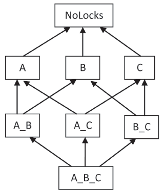

Dr. Dobb's Journal January 2009
The two major problems in concurrent programs are data races and deadlocks. The solutions that Bartosz presents here is based on a deadlock-avoidance protocol.
The two major problems in concurrent programs are data races and deadlocks. Races occur when two or more threads are accessing shared memory without proper synchronization. Deadlocks occur when synchronization is based on locking and multiple threads block each other's progress. In a typical deadlock scenario, thread A locks the mutex X, and thread B locks the mutex Y. Now, in lockstep, thread A tries to lock Y and B tries to lock X. Neither can make progress, waiting forever for the other thread to release its lock. The program freezes.
In a sense, data races are the opposite of deadlocks. The former result from not enough synchronization, the latter usually happen when there's too much synchronization and it gets out of hand.
There are sophisticated schemes to prevent races and/or deadlocks, but they either require special language support or strict discipline on the part of programmers. Here I present a solution based on a well-known deadlock-avoidance protocol and show how it can be enforced by the compiler. It can be applied to programs in which the number of locks is fixed and known up front.
This scheme could probably be implemented in C++ by somebody skilled in template metaprogramming. I chose the D language (www.digitalmars.com/D) instead—a language from the same curly-brace family, but with more user-friendly support for metaprogramming. Most code samples in this article should be easy to understand if you're familiar with C++, Java, or C#.
The crucial observation is that deadlocks occur when threads take locks in different order. In the previous example, thread A tried to take locks X and then Y, while thread B tried to take lock Y, then X. If you could ensure that all threads that take both locks take them in the same order, you'd know they will not deadlock (at least not on those two locks).
In some programs all locks are known at compile time and you can prescribe the order in which they are to be taken. Strictly speaking, the ordering doesn't have to be total—partial order is sufficient (for example, the way nodes are ordered in a tree using parent/child relationship). If two locks are never taken together, they don't have to be ordered. In any case, given a partial order, there always is a way to sort the locks into some linear sequence (it's called "topological sort"). So without loss of generality, I assume that we have such a sequence of locks in our program.
Now it's easy to convince yourself that if all threads take locks in the order compatible with this sequence, there will be no deadlocks. (Notice that it's okay to skip some locks in the sequence.)
Even the best protocol doesn't amount to much if it cannot be enforced. The first thing that comes to mind is to try to enforce the scheme at runtime. Every time you take a lock you would add it to a thread-local list and, if you detected an out of order attempt, you'd throw an exception. Releasing a lock would take it off the list.
The problem with runtime enforcement is that concurrency bugs are hard to reproduce. The program may go through testing with flying colors only to deadlock months or years later on a client's machine. I'll concentrate on ways to enforce deadlock freedom at compile time.
A compile-time scheme is by necessity more restrictive; it might reject perfectly valid programs. But once the program compiles or, more precisely, type-checks, you have the guarantee that it will never deadlock.
I realized that the biggest problem in statically enforcing a lock-ordering scheme is that you don't know which locks may be taken by the functions you are calling. Suppose your function takes lock number 6 in the global sequence. As long as you hold onto it, you shouldn't be able to call any function that may take any lower-numbered locks. Suppose that the information about what locks may be taken by a function—its lock options—could be encoded in its type signature. Trying to call a function that is declared to take lock 5 from a function that takes lock 6 would result in a type error.
How can you encode, using the type system, the information that, say, lock 6 has been taken? It turns out that there is a trick to that.
First let's talk about the way to encode locking options in the function's signature. I took inspiration from Scott Meyers's article "Enforcing Code Feature Requirements in C++" (http://www.artima.com/cppsource/codefeatures.html). His idea was to encode compile-time information about a function in the type of a dummy argument. In my scheme, a dummy parameter is used to encode the function's locking options. This parameter is forwarded from callers to callees. The compiler makes sure that, for every call, the type of the actual dummy argument is compatible (convertible) to the type of the formal dummy parameter. Such a set of types with appropriate conversions is best implemented as a hierarchy of interfaces in D (classes in C++).
For simplicity, assume that locks are given names, and the global sequence is sorted alphabetically. There should be a separate type for "I may take locks A, B, and D" and another for "I may take lock D", and so on. Let's call the first type A_B_D and the second type D.
A derived interface is implicitly convertible to any of its base interfaces (and their bases, transitively). Figure 1 shows the interface hierarchy for three locks—A, B, and C. The top of the hierarchy is the special interface called NoLocks. It can be used to mark a function that doesn't take any locks. Interface A_B describes the option to take locks A and B (in this order), and so on. Listing One presents the actual declaration of such a hierarchy.
It's clear from Figure 1 that a type describing wider lock options can be implicitly converted to any type describing narrower lock options. In other words, it is okay for a function that has the option to take a larger set of locks to call a function that has the option to take a subset of those locks, but not the other way around.

In what follows, I call the dummy variable lockOptions. Below is an example of a function f that declares the option to take locks A, B, and C. It calls another function, g, which declares the option to take a subset of those locks, namely B and C. The call compiles because the type A_B_C is implicitly convertible to the type B_C:
int g(B_C lockOptions); int f(int x, A_B_C lockOptions) { return g(lockOptions); // OK }
The following calls, however, will not compile, because the appropriate conversions are missing:
void g1(A lockOptions); void g2(A_B_C lockOptions); void f1(B_C lockOptions) { g1(lockOptions); // type error g2(lockOptions); // type error }
In my first attempt at an implementation, I annotate functions by hand. To begin with, any function that explicitly takes a lock must have this lock in its signature—it must take a dummy parameter of the appropriate type. For the callers of these functions to compile, they too have to take dummy parameters of the appropriate type and pass them to the callees. It's as if functions that take locks were tainted, and all functions that call them become tainted, too. Below, the function CallsBoth is tainted with lock options A and B because it calls tainted functions TakesA and TakesB:
void TakesA(A lockOptions); void TakesB(B lockOptions); void CallsBoth(A_B lockOptions) { TakesA(lockOptions); TakesB(lockOptions); }
The annotation (tainting) process ends at some high level, where you simply define a dummy variable of the appropriate type and pass it down. For instance:
void main() { A_B lockOptions; CallsBoth(lockOptions); }
Now that I have the type system on my side, let's talk about locking. Because I'm assuming that locks are known at compile time, I can simplify things by putting all mutexes in a global associative array:
Mutex[string] mutexes;
Taking a lock for the duration of a given scope is done by declaring a scope variable:
scope __scopelock = new Lock(mutexes["B"]);
Scope variables in D are guaranteed to be destroyed at the end of their scope (without waiting for a garbage collection sweep).
There is one piece of the puzzle missing. What should I do when a function takes a given lock and then calls another function that declares lock options? Consider this example:
void f(int x, A_B_C lockOptions) {
{ // begin lock scope
scope __scopelock = new Lock(mutexes["B"]);
TakesA(lockOptions); // Oh no!!!
} // end lock scope
}
This function compiles because A_B_C is convertible to A. On the other hand, this is exactly the situation we tried to avoid—taking lock A after lock B (remember, I assumed that locks must be taken in alphabetical order). A recipe for a deadlock!
My solution is to redefine the variable lockOptions immediately after taking the lock. The type of that new variable should be derived from the type of the outer lockOptions and from the name of the lock that's been just taken. This type must encapsulate the remaining lock options.
Here's the key to my algorithm—the new lock options (a sequence of locks that may still be taken safely) are the old lock options stripped of all locks that alphabetically precede the lock just taken. If these new lock options are enforced when calling other functions, a deadlock is impossible—no lock can be taken out of order.
Here's the modified example:
void f(int x, A_B_C lockOptions) { TakesA(lockOptions); // OK { // These two lines will be // generated together scope __scopelock = new Lock(mutexes ["B"]); B_C lockOptions; // stripped A TakesC(lockOptions); // Okay to take C after B TakesA(lockOptions); // Compile error! } TakesA(lockOptions); // OK, using outer lockOptions }
The outer-scope variable lockOptions is redefined in the inner scope and given a different type. It is this shadowing that makes the scheme virtually foolproof—the outer lockOptions cannot be accessed after the inner lockOptions is declared. The shadowing lasts until the end of the scope, which coincides with the end of the scope of the lock itself, which is exactly what was ordered.
To make my deadlock-prevention scheme practical, I need to automate code generation. In D, code can be generated from strings using mixins. Strings can be manipulated during compile time to produce the desired code. Moreover, in D, you don't have to learn a separate language to evaluate things at compile time. A sizable subset of D can be executed at compile time. Because compile-time functions can also be called at runtime, testing and debugging is a breeze.
I start with the task of creating some global declarations. I need to:
The input, known at compile time, is the list of lock names. Here, I name my locks "A", "B", and "C" (normally, one would use more meaningful names). In client's code, all this is accomplished in one top-level statement:
mixin(declareAllLocks (["A", "B", "C"]));
The order in which lock names are specified doesn't matter—they will be sorted alphabetically at compile time.
Particular lock options are generated using a compile-time function, Options, which again takes a list of lock names. The result of Options, a string, is converted to a proper type at compile time using a template ToType. For instance, to generate the type that encapsulates the option to take locks "A" and "B", the client writes:
ToType!(Options(["A", "B"]))
D's template syntax uses the exclamation mark to introduce template parameters (equivalent to angle brackets in C++ and lookalikes). Here, the template ToType is parametrized by a compile-time string returned by Options.
Below is the declaration of a function with the option to take locks "A" and "B":
void takeAB(ToType!(Options(["A", "B"])) lockOptions);
Notice that the lock option variable must be named lockOptions for another mixin, LOCK, to work. This mixin combines the taking of a named lock with the declaration of a new local variable, lockOptions, as described earlier. Here, lock "A" is taken for the duration of its scope:
mixin(LOCK("A"));
Listing Two shows the example of user code. The complete implementation is available online at www.ddj.com/code/).
The deadlock-prevention scheme described here has a lot of limitations. It doesn't work with fine-grain locking, where the number of dynamically created objects with their own locks is unpredictable. It doesn't deal with more general reentrancy, where a thread can retake any of the locks it already holds. On the other hand, lock-taking is encoded in the type system, so once the program compiles, it is guaranteed not to deadlock (at least not on the locks that take part in the scheme). That's a much stronger guarantee than even the most comprehensive runtime testing can provide.
I'm grateful to Scott Meyers for making an early version of his paper available to me, and to Andrei Alexandrescu and Walter Bright for valuable comments.